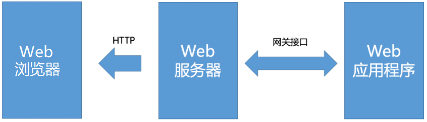
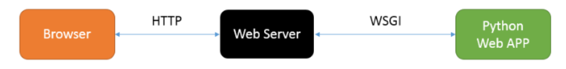
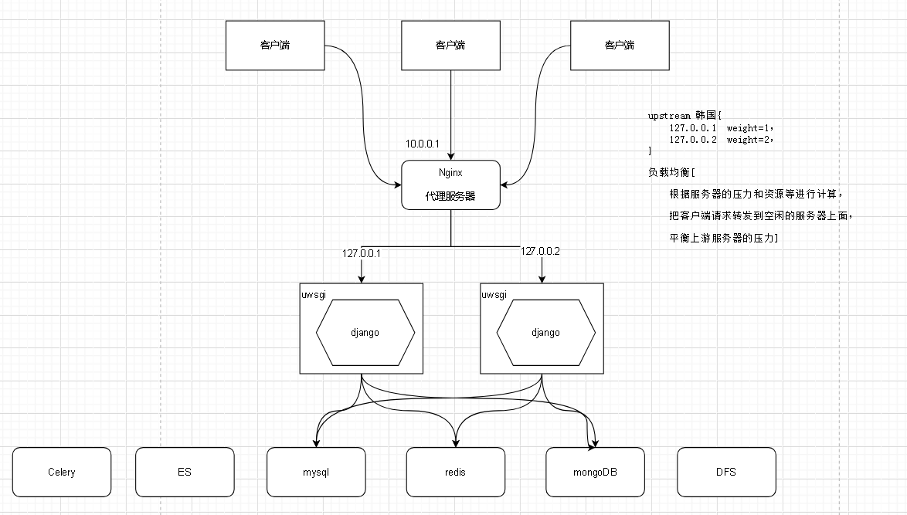
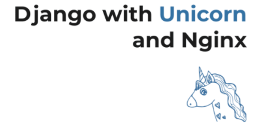

WSGI和ASGI，都是基于Python设计的网关接口（Gateway Interface，GI）。
WSGI是python语言基于http协议模式开发的，不支持websocket协议，而ASGI的诞生解决了python中的WSGI不支持当前的web开发中的一些新的协议标准，同时ASGI支持原有模式和Websocket的扩展，即ASGI是WSGI的扩展。
网关接口（Gateway Interface，GI）就是一种为了实现加载动态脚本而运行在Web服务器和Web应用程序中的通信接口，也可以理解为一份协议/规范。只有Web服务器和Web应用程序都实现了网关接口规范以后，双方的通信才能顺利完成。常见的网关接口协议：CGI，FastCGI，WSGI，ASGI。

公共网关接口（Common Gateway Interface，CGI）是最早的Web服务器主机提供信息服务的标准接口规范。只要实现了CGI协议，Web服务器就能够获取并了解客户端提交的信息，转交给服务器端的web应用程序进行处理，最后返回结果给客户端。
CGI程序是一种实现了CGI协议的程序。
快速通用网关接口（Fast Common Gateway Interface／FastCGI）是一种让web应用程序与Web服务器通信的协议。FastCGI是公共网关接口（CGI）的增强版本。
Web服务器（Web Server）是一种运行于网站后台（物理服务器）的软件。Web服务器主要用于提供网页浏览或文件下载服务，它可以向浏览器等Web客户端提供html网页文档，也可以提供其他类型的可展示文档，让客户端用户浏览；还可以提供数据文件下载等。目前世界上最主流的Web服务器有 Nginx 、Apache、IIS、tomcat。
Web应用程序（Web Programming Application）是一种能完成web业务逻辑，能让用户基于web浏览器访问的应用程序，它可以是一个实现http请求和响应功能的函数或者类，也可以是Django、Flask、FastAPI等这样的web框架，当然也可以是其他语言的web程序或web框架。
xxxxxxxxxx51问：Web服务器和Web应用程序的区别？2答：Web应用程序主要是完成web应用的业务逻辑的处理，Web服务器则主要是应对外部请求的接收、响应和转发。3 需要使用web服务器启动运行，web应用程序才能被用户访问到。4 而django框架中，我们之所以只有一个web应用程序就跑起来了，是因为我们在终端执行了一个命令，python manage.py runserver。5 这个命令启动了django框架中内置提供的测试web服务器。

Web服务器网关接口（Web Server Gateway Interface，WSGI），是Python为了解决Web服务器端与客户端之间的通信基于CGI标准而设计的。实现了WSGI协议的web服务器有：uWSGI、gunicorn、uvicorn、Hypercorn。像django框架开发的项目一般在线上服务器运行就不会使用runserver来运行，而是采用上面实现了WSGI协议的web服务器来运行。
django中运行runserver命令时，其实内部就启动了wsgiref模块作为web服务器运行的。wsgiref是python内置的一个简单地遵循了wsgi接口规范的web服务器程序。
server.py，代码：
xxxxxxxxxx321from wsgiref.simple_server import make_server2# application 由wsgi服务器调用、函数对http请求与响应的封装、使得Python专注于HTML3# environ http 请求 (是一个字典)4# start_response 响应 (是一个函数)56def application(environ, start_response):7 """web应用程序"""8 # 判断请求9 if environ['REQUEST_METHOD'] == 'GET' and environ['PATH_INFO'] == '/':10 # 响应11 start_response('200 OK', [('Content-Type', 'text/html')])12 return [b'<h1>hi, python!</h1>']13 # 判断请求14 elif environ['REQUEST_METHOD'] == 'GET' and environ['PATH_INFO'] == '/python':15 # 响应16 start_response('200 OK', [('Content-Type', 'text/html')])17 return [b"<h1>it work!</h1>"]1819if __name__ == '__main__':20 # 启动服务器 | 这个服务器负责与 wsgi 接口的 application 函数对接数据21 httpd = make_server('127.0.0.1', 8888, application)2223 # 监听请求24 httpd.serve_forever()2526 # 1. 监听8000端口,27 # 2. 把http请求根据WSGI协议将其转换到applcation中的environ参数, 然后调用application函数.28 # 3. wsgiref会把application函数提供的响应头设置转换为http协议的响应头,29 # 4. 把application的返回(return)作为响应体, 根据http协议,生成响应, 返回给浏览器.3031 # http://127.0.0.1:8888/32 # http://127.0.0.1:8888/python开发中，我们一般使用uWSGI或者Gunicorn作为web服务器运行django。
uWSGI 是一个快速的，自我驱动的，对开发者和系统管理员友好的应用容器服务器，完全由 C 编写，实现了WSGI协议,uwsgi,http等协议。注意：uwsgi 协议是一个 uWSGI服务器自有的协议,用于定义传输信息的类型，常用于uWSGI服务器与其他网络服务器的数据通信中。
文档：https://docs.djangoproject.com/zh-hans/3.2/howto/deployment/wsgi/uwsgi/
配置：https://uwsgi.readthedocs.io/en/latest/Configuration.html
xxxxxxxxxx21conda config --add channels conda-forge2conda install uWSGI项目根目录下创建uwsgi配置文件，uwsgi.ini(不是python文件)，代码样本：
xxxxxxxxxx211[uwsgi]2#使用nginx连接时使用，Django程序所在服务器地址3socket=0.0.0.0:80004#直接做web服务器使用，Django程序所在服务器地址5# http=0.0.0.0:80006#项目目录7chdir=项目根目录绝对路径8#项目中wsgi.py文件的目录，相对于项目目录9wsgi-file=主应用目录/wsgi.py10# 进程数 CPU * 2 -111processes=412# 线程数13threads=214# uwsgi服务器的角色15master=True16# 存放进程编号的文件17pidfile=uwsgi.pid18# 日志文件，因为uwsgi可以脱离终端在后台运行，日志看不见。我们以前的runserver是依赖终端的19daemonize=uwsgi.log20# 指定依赖的虚拟环境21virtualenv=虚拟环境的绝对路径uwsgi.ini，代码：
xxxxxxxxxx231[uwsgi]2# 使用nginx连接时使用，Django程序所在服务器地址3# socket=0.0.0.0:80004# 直接做web服务器使用，Django程序所在服务器地址5http=0.0.0.0:80006# 项目目录7# chdir=项目根目录，务必使用绝对路径8chdir=/home/moluo/Desktop/djdemo9# 项目中wsgi.py文件的目录，相对于项目根目录10wsgi-file=djdemo/wsgi.py11# 进程数 CPU * 2 - 1 , 也可以不减112processes= 413# 线程数 CPU数量14threads=215# uwsgi服务器的角色16master=True17# 存放进程编号的文件18pidfile=uwsgi.pid19# 日志文件，因为uwsgi可以脱离终端在后台运行，日志看不见。我们以前的runserver是依赖终端的20daemonize=uwsgi.log21# 指定依赖的虚拟环境22# virtualenv=/root/.virtualenvs/环境名称23virtualenv=/home/moluo/anaconda3/envs/djdemo项目根目录下，启动uwsgi服务器
xxxxxxxxxx181# 启动项目2uwsgi --ini uwsgi.ini34# 停止运行5uwsgi --stop uwsgi.pid # 调用系统的 kill -9 uwsgi.pid中的进程号67# 查看当前系统中的指定名称的进程8ps aux | grep uwsgi910# 输出效果如下，则表示成功运行，接下来就可以根据配置中设置的地址访问项目了。11# (base) moluo@ubuntu:~$ ps aux | grep uwsgi12# moluo 12759 2.3 0.9 96944 37736 ? S 11:52 0:00 uwsgi --ini uwsgi.ini13# moluo 13167 0.0 0.7 170676 29468 ? Sl 11:52 0:00 uwsgi --ini uwsgi.ini14# moluo 13169 0.0 0.7 170676 29468 ? Sl 11:52 0:00 uwsgi --ini uwsgi.ini15# moluo 13171 0.0 0.7 170676 29468 ? Sl 11:52 0:00 uwsgi --ini uwsgi.ini16# moluo 13173 0.0 0.7 170676 29468 ? Sl 11:52 0:00 uwsgi --ini uwsgi.ini17# moluo 13176 0.0 0.8 105140 35416 ? S 11:52 0:00 uwsgi --ini uwsgi.ini18# moluo 18073 0.0 0.0 17688 740 pts/2 R+ 11:52 0:00 grep --color=auto uwsgi
ASGI，是构建于WSGI接口规范之上的异步服务器网关接口，是WSGI的延伸和扩展。
xxxxxxxxxx11A指的是Async，异步的意思。
| 协议，规范 | 支持的请求协议（常见，未列全） | 同步/异步 | 支持的框架 |
|---|---|---|---|
| CGI | HTTP | CGI程序 | |
| WSGI | HTTP | 同步 | django3.0以前，Flask1.0 |
| ASGI | HTTP，HTTP2，WebSocket等 | 同步/异步 | FastAPI，Tornado，django3.1以后，flask2.0 |
在 Python3.5 之后增加 async/await 特性之后简化了协程操作以后，异步编程变得异常火爆，越来越多开发者投入异步的怀抱。
3.0版本以前，django所提供的所有内部功能都是基于同步编程的。所以，在以往django开发中，针对网络请求，数据库读取等IO操作形成的阻塞，往往会导致项目运行性能的下降。虽然等待I/O操作数微秒时，但是随着流量的增加和操作的频率上升，这一点点的阻塞就会导致整个项目运作的缓慢。而如果换成异步就不会有任何阻塞，还可以同时处理其他任务，从而以较低的延迟处理更多的请求。所以在目前python开发中，越来越多的框架开始支持了异步编程。所以，3.0版本以后，django开始支持异步编程，可以让开发者在django中使用python第三方异步模块，推出了asgi异步web服务器。3.1版本推出了异步视图，当然，目前django的异步编程还不够完善，django中只有极少的功能是支持了异步操作。

Uvicorn 是一个快速的 ASGI 服务器，Uvicorn 是基于 uvloop 和 httptools 构建的，是 Python 异步生态中重要的一员。
Uvicorn 当前支持 HTTP / 1.1 和 WebSockets，将来计划支持HTTP/2.0。
安装uvicorn
xxxxxxxxxx11pip install uvicorn项目根目录下，运行django项目
xxxxxxxxxx21# uvicorn 主应用目录名.asgi:application --reload2uvicorn djdemo.asgi:application --reload开发中一般使用gunicorn来管理uvicorn。所以可以一并安装
xxxxxxxxxx11pip install gunicorn运行
xxxxxxxxxx21# gunicorn -w 4 主应用目录名.asgi:application -k uvicorn.workers.UvicornWorker --reload2gunicorn -w 4 djdemo.asgi:application -k uvicorn.workers.UvicornWorker --reload
文档：https://docs.djangoproject.com/zh-hans/4.2/topics/async/
在Django3.1后的版本中，我们可以通过async def语法，将任何函数视图定义为异步视图。
xxxxxxxxxx121"""同步视图"""2import time3def home1(request):4 time.sleep(5)5 return HttpResponse('Hello, sync view!')67"""异步视图"""8import asyncio9async def home2(request):10 # asyncio.sleep(5)11 await asyncio.sleep(5) # 开发中，一般就是ORM操作，http请求，或者读取文件等IO操作，就需要在左边上加上 await12 return HttpResponse('Hello, async view!')
类视图，django内部是将它的__call__()方法定义为async def，成为异步视图。
xxxxxxxxxx71class Home3View(View):2 async def __call__(self, *args, **kwargs): # 当把一个类当函数去调用，就会触发__call__方法3 return super().__call__(*args, **kwargs)45 async def get(self, request):6 await asyncio.sleep(5)7 return HttpResponse("ok, get")
django4.2版本的ORM对数据库的访问这块还没有全面实现异步处理，默认还是同步的。当我们需要在项目中调用模型进行异步操作时，django有提供了2个适配函数，可从asgiref.sync包中获取：async_to_sync()和 sync_to_async() 。它们用于同步和异步之间调用风格的转换，同时保持兼容性。适配函数既可以当包装函数使用，也可以作为装饰器使用。
async_to_sync()：异步转同步，参数就是同步函数
sync_to_async()：同步转异步，参数就是异步函数
xxxxxxxxxx81from asgiref.sync import async_to_sync2# 用法13sync_function = async_to_sync(async_function)45# 用法26async def async_function(...):8 pass代码：
xxxxxxxxxx541from django.views import View2from django.http.response import JsonResponse3from component import models4from asgiref.sync import sync_to_async567# Create your views here.8class User1View(View):9 async def __call__(self, *args, **kwargs):10 return super().__call__(*args, **kwargs)1112 async def get(self, request):13 """因为是异步视图，无法直接使用同步代码，所以报错：SynchronousOnlyOperation"""14 # student = models.Student.objects.get(id=12)15 # print(student)1617 """在异步视图中，必须异步操作模型"""18 # sync_to_async(models.Student.objects.get, thread_sensitive=True)19 # 上面就是把 models.Student.objects.get 进行异步转换，在线程安全模式运行2021 """异步获取一条数据"""22 # aget = sync_to_async(models.Student.objects.get, thread_sensitive=True)23 # student = await aget(id=12) # # aget就是get的异步方法，调用方法与原来的get一样24 # return JsonResponse({"msg": "ok, get", "data": {25 # "id": student.id,26 # "name": student.name,27 # }})2829 """异步获取多条数据"""30 # # QuerySet 惰性查询，all执行的时候，根本没发生数据操作，自然也就没有IO31 # student_objs = models.Student.objects.all()32 # student_list = []33 # async for student in student_objs:34 # student_list.append({35 # "id": student.id,36 # "name": student.name,37 # })38 # return JsonResponse({"msg": "ok, get", "data": student_list})3940 """异步添加数据"""41 acreate = sync_to_async(models.Student.objects.create, thread_sensitive=False)42 student = await acreate(43 name="小柏",44 age=13,45 sex=True,46 mobile="13956567878",47 status=1,48 classmate="307",49 description="话不多数，上就完事了！")50 return JsonResponse({"msg": "ok, get", "data": {51 "id": student.id,52 "name": student.name,53 }}, status=201)54
redis异步库：aioredis
mysql异步库：aiomysql
mongoDB异步库：motor
http网络请求异步库：httpx
views.py，代码：
xxxxxxxxxx191import httpx2from django.views import View3from django.http.response import JsonResponse4from component import models5from asgiref.sync import sync_to_async678# Create your views here.9class User1View(View):10 async def __call__(self, *args, **kwargs):11 return super().__call__(*args, **kwargs)1213 async def get(self, request):14 """异步网络请求"""15 # 同步代码在遇到IO操作时就会出现阻塞，所以异步代码在IO时需要交出程序执行权16 async with httpx.AsyncClient() as client:17 response = await client.get("https://httpbin.org/get")18 return JsonResponse(response.json())19
3.1版本以后，django还提供了中间件的异步支持。
xxxxxxxxxx491"""2wsgiref 是python内置模块，提供给开发者在开发时，用于创建同步web服务器3asgiref 是python内置模块，提供给开发者在开发时，用于创建异步web服务器4"""5"""异步中间件"""678"""异步函数中间件"""9from asgiref.sync import iscoroutinefunction10# iscoroutinefunction 是python内置 判断当前参数是否是协程函数，如果是协程函数，则返回值为True，否则False111213def simple_middleware(get_response):14 if iscoroutinefunction(get_response):15 async def middleware(request):16 response = await get_response(request)17 return response18 else:19 def middleware(request):20 response = get_response(request)21 return response22 return middleware232425"""异步类中间件"""26from asgiref.sync import iscoroutinefunction, markcoroutinefunction27# markcoroutinefunction 把当前参数标记为协程函数282930class SimpleMiddleware2:31 """异步中间件"""32 async_capable = True33 sync_capable = False3435 def __init__(self, get_response):36 self.get_response = get_response37 if iscoroutinefunction(self.get_response):38 markcoroutinefunction(self)3940 async def __call__(self, request):41 response = await self.get_response(request)42 return response4344 async def process_request(self, request):45 print("视图执行之前!!")4647 async def process_response(self, request, response):48 print("视图执行以后！！")49 return response